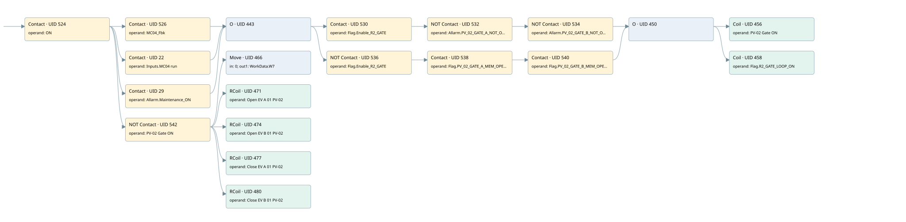

pv-02 rotary drum discharge valve
r1 scraps gate 2 · 검색 색인 순서 6 · 원본 내부 NID 추정 5
백업 PLF 원본의 2831195 바이트 위치에서 복원한 XML. 검색 문서 1916의 객체 키 16102200e111000000000000와 연결했다. 이름 해석 19/19개. 남은 RefId는 상수 또는 미해석 참조다.
연결 구조 다시 그리기
원본 Part/PCon/Wire를 이용한 연결도다. TIA 화면의 래더 배치 또는 실행 결과를 재현한 그림은 아니다. 핀 연결은 아래 표와 원본 XML을 기준으로 읽는다. 노드 위에 마우스를 두면 피연산자 이름을 볼 수 있다.

접점·코일·블록과 피연산자
| Part UID | Gate | Negated 핀 | 연결 피연산자 |
|---|---|---|---|
| 524 | Contact | operand = ON | |
| 526 | Contact | operand = MC04_Fbk | |
| 22 | Contact | operand = Inputs.MC04 run | |
| 29 | Contact | operand = Allarm.Maintenance_ON | |
| 443 | O | ||
| 530 | Contact | operand = Flag.Enable_R2_GATE | |
| 532 | Contact | operand | operand = Allarm.PV_02_GATE_A_NOT_OPEN |
| 534 | Contact | operand | operand = Allarm.PV_02_GATE_B_NOT_OPEN |
| 536 | Contact | operand | operand = Flag.Enable_R2_GATE |
| 538 | Contact | operand = Flag.PV_02_GATE_A_MEM_OPEN | |
| 540 | Contact | operand = Flag.PV_02_GATE_B_MEM_OPEN | |
| 450 | O | ||
| 456 | Coil | operand = PV-02 Gate ON | |
| 458 | Coil | operand = Flag.R2_GATE_LOOP_ON | |
| 542 | Contact | operand | operand = PV-02 Gate ON |
| 466 | Move | in = 0; out1 = WorkData.W7 | |
| 471 | RCoil | operand = Open EV A 01 PV-02 | |
| 474 | RCoil | operand = Open EV B 01 PV-02 | |
| 477 | RCoil | operand = Close EV A 01 PV-02 | |
| 480 | RCoil | operand = Close EV B 01 PV-02 |
접점 경로를 펼친 조건식
Contact·O/A·비교기의 원본 연결을 읽기 쉽게 펼친 보조 해석이다. POWER는 전원 레일 시작을 뜻한다. 호출 블록·에지·타이머의 내부 동작과 다중 쓰기 순서는 이 표로 실행 검증하지 않았다. 미해석 핀과 RefId는 원문 연결표에서 확인한다.
| UID | 동작 | 대상 | 원본 접점 경로 | 내용 |
|---|---|---|---|---|
| 456 | Coil | PV-02 Gate ON | ((((((ON AND MC04_Fbk) OR (ON AND Inputs.MC04 run) OR (ON AND Allarm.Maintenance_ON)) AND Flag.Enable_R2_GATE) AND NOT [Allarm.PV_02_GATE_A_NOT_OPEN]) AND NOT [Allarm.PV_02_GATE_B_NOT_OPEN]) OR (((((ON AND MC04_Fbk) OR (ON AND Inputs.MC04 run) OR (ON AND Allarm.Maintenance_ON)) AND NOT [Flag.Enable_R2_GATE]) AND Flag.PV_02_GATE_A_MEM_OPEN) AND Flag.PV_02_GATE_B_MEM_OPEN)) | 조건에 따른 Coil 기록 |
| 458 | Coil | Flag.R2_GATE_LOOP_ON | ((((((ON AND MC04_Fbk) OR (ON AND Inputs.MC04 run) OR (ON AND Allarm.Maintenance_ON)) AND Flag.Enable_R2_GATE) AND NOT [Allarm.PV_02_GATE_A_NOT_OPEN]) AND NOT [Allarm.PV_02_GATE_B_NOT_OPEN]) OR (((((ON AND MC04_Fbk) OR (ON AND Inputs.MC04 run) OR (ON AND Allarm.Maintenance_ON)) AND NOT [Flag.Enable_R2_GATE]) AND Flag.PV_02_GATE_A_MEM_OPEN) AND Flag.PV_02_GATE_B_MEM_OPEN)) | 조건에 따른 Coil 기록 |
| 466 | Move | WorkData.W7 | (ON AND NOT [PV-02 Gate ON]) | Move 입력 0 |
| 471 | RCoil | Open EV A 01 PV-02 | (ON AND NOT [PV-02 Gate ON]) | 조건 성립 시 Reset |
| 474 | RCoil | Open EV B 01 PV-02 | (ON AND NOT [PV-02 Gate ON]) | 조건 성립 시 Reset |
| 477 | RCoil | Close EV A 01 PV-02 | (ON AND NOT [PV-02 Gate ON]) | 조건 성립 시 Reset |
| 480 | RCoil | Close EV B 01 PV-02 | (ON AND NOT [PV-02 Gate ON]) | 조건 성립 시 Reset |
원본 배선 연결
| Wire UID | 동일 Wire 연결 끝점 |
|---|---|
| 544 | Powerrail {} ↔ Part 524.in |
| 499 | ORef 481 (ON) ↔ Part 524.operand |
| 525 | Part 524.out ↔ Part 526.in ↔ Part 22.in ↔ Part 29.in ↔ Part 542.in |
| 500 | ORef 482 (MC04_Fbk) ↔ Part 526.operand |
| 527 | Part 526.out ↔ Part 443.in1 |
| 21 | ORef 23 (Inputs.MC04 run) ↔ Part 22.operand |
| 24 | Part 22.out ↔ Part 443.in2 |
| 28 | ORef 30 (Allarm.Maintenance_ON) ↔ Part 29.operand |
| 31 | Part 29.out ↔ Part 443.in3 |
| 502 | Part 443.out ↔ Part 530.in ↔ Part 536.in |
| 503 | ORef 484 (Flag.Enable_R2_GATE) ↔ Part 530.operand |
| 531 | Part 530.out ↔ Part 532.in |
| 504 | ORef 485 (Allarm.PV_02_GATE_A_NOT_OPEN) ↔ Part 532.operand |
| 533 | Part 532.out ↔ Part 534.in |
| 505 | ORef 486 (Allarm.PV_02_GATE_B_NOT_OPEN) ↔ Part 534.operand |
| 535 | Part 534.out ↔ Part 450.in1 |
| 507 | ORef 487 (Flag.Enable_R2_GATE) ↔ Part 536.operand |
| 537 | Part 536.out ↔ Part 538.in |
| 508 | ORef 488 (Flag.PV_02_GATE_A_MEM_OPEN) ↔ Part 538.operand |
| 539 | Part 538.out ↔ Part 540.in |
| 509 | ORef 489 (Flag.PV_02_GATE_B_MEM_OPEN) ↔ Part 540.operand |
| 541 | Part 540.out ↔ Part 450.in2 |
| 511 | Part 450.out ↔ Part 456.in ↔ Part 458.in |
| 512 | ORef 490 (PV-02 Gate ON) ↔ Part 456.operand |
| 513 | ORef 491 (Flag.R2_GATE_LOOP_ON) ↔ Part 458.operand |
| 515 | ORef 492 (PV-02 Gate ON) ↔ Part 542.operand |
| 543 | Part 542.out ↔ Part 466.en ↔ Part 471.in ↔ Part 474.in ↔ Part 477.in ↔ Part 480.in |
| 516 | ORef 493 (0) ↔ Part 466.in |
| 517 | Part 466.out1 ↔ ORef 494 (WorkData.W7) |
| 518 | ORef 495 (Open EV A 01 PV-02) ↔ Part 471.operand |
| 519 | ORef 496 (Open EV B 01 PV-02) ↔ Part 474.operand |
| 520 | ORef 497 (Close EV A 01 PV-02) ↔ Part 477.operand |
| 521 | ORef 498 (Close EV B 01 PV-02) ↔ Part 480.operand |
식별자 해석 근거 19개
| ORef UID | RefId | 이름 | IdentXmlPart 파일 | 해석 방법 |
|---|---|---|---|---|
| 481 | 1 | ON | 0607-IdentXmlPart.xml | UID/RID + search-text + NID agreement |
| 482 | 51 | MC04_Fbk | 0607-IdentXmlPart.xml | UID/RID + search-text + NID agreement |
| 23 | 87 | Inputs.MC04 run | 0609-IdentXmlPart.xml | UID/RID + search-text + NID agreement |
| 30 | 156 | Allarm.Maintenance_ON | 0609-IdentXmlPart.xml | UID/RID + search-text + NID agreement |
| 484 | 52 | Flag.Enable_R2_GATE | 0609-IdentXmlPart.xml | UID/RID + search-text + NID agreement |
| 485 | 53 | Allarm.PV_02_GATE_A_NOT_OPEN | 0609-IdentXmlPart.xml | UID/RID + search-text + NID agreement |
| 486 | 54 | Allarm.PV_02_GATE_B_NOT_OPEN | 0609-IdentXmlPart.xml | UID/RID + search-text + NID agreement |
| 487 | 52 | Flag.Enable_R2_GATE | 0609-IdentXmlPart.xml | UID/RID + search-text + NID agreement |
| 488 | 55 | Flag.PV_02_GATE_A_MEM_OPEN | 0609-IdentXmlPart.xml | UID/RID + search-text + NID agreement |
| 489 | 56 | Flag.PV_02_GATE_B_MEM_OPEN | 0609-IdentXmlPart.xml | UID/RID + search-text + NID agreement |
| 490 | 57 | PV-02 Gate ON | 0607-IdentXmlPart.xml | UID/RID + search-text + NID agreement |
| 491 | 58 | Flag.R2_GATE_LOOP_ON | 0609-IdentXmlPart.xml | UID/RID + search-text + NID agreement |
| 492 | 57 | PV-02 Gate ON | 0607-IdentXmlPart.xml | UID/RID + search-text + NID agreement |
| 493 | 16 | 0 | 0610-IdentXmlPart.xml | literal candidate: UID/RID/NID + nearby named declarations + search-text agreement |
| 494 | 60 | WorkData.W7 | 0609-IdentXmlPart.xml | UID/RID + search-text + NID agreement |
| 495 | 61 | Open EV A 01 PV-02 | 0607-IdentXmlPart.xml | UID/RID + search-text + NID agreement |
| 496 | 62 | Open EV B 01 PV-02 | 0607-IdentXmlPart.xml | UID/RID + search-text + NID agreement |
| 497 | 63 | Close EV A 01 PV-02 | 0607-IdentXmlPart.xml | UID/RID + search-text + NID agreement |
| 498 | 64 | Close EV B 01 PV-02 | 0607-IdentXmlPart.xml | UID/RID + search-text + NID agreement |
검색 코드 보조 자료
참조 명칭을 찾기 위한 자료이며 실행 순서나 AND/OR 관계는 위 연결표로 확인한다.
"on" "mc04_fbk" "flag".enable_r2_gate "allarm".pv_02_gate_a_not_open "allarm".pv_02_gate_b_not_open "pv-02 gate on" "inputs"."mc04 run" "allarm".maintenance_on "pv-02 gate on" move 0 "open ev a 01 pv-02" "open ev b 01 pv-02" "close ev a 01 pv-02" "close ev b 01 pv-02" "workdata".w7 "flag".enable_r2_gate "flag".pv_02_gate_a_mem_open "flag".pv_02_gate_b_mem_open "flag".r2_gate_loop_on